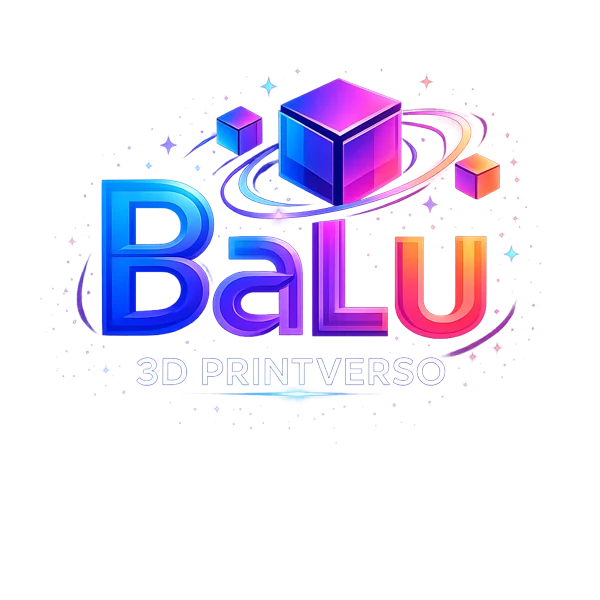
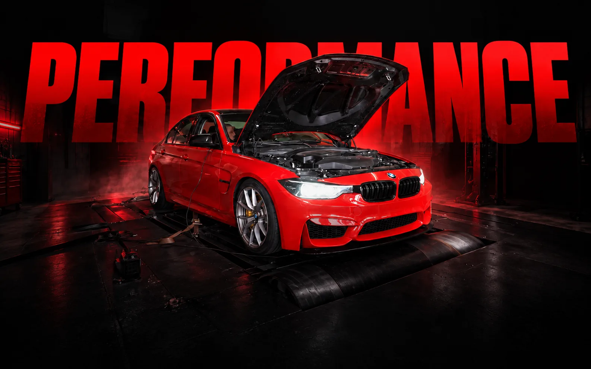

01 / EDTECH / OPEN SOURCE
DebugArena
Aprender a programar.
Investigando o que deu errado.
24 investigações · Avaliação no servidorAbrir projeto ↗
DESENVOLVIMENTO WEB & EXPERIÊNCIAS DIGITAIS
Olhar de quem cria.
Precisão de quem desenvolve.
PENSADO. DESENVOLVIDO. ENTREGUE.
Da interface à lógica que ninguém vê.
Construo para conectar as
duas.
TRABALHO SELECIONADO / 2026
Projetos reais. Decisões com contexto.
Entre para conhecer o
processo.
Aprender a programar.
Investigando o que deu errado.
Uma experiência de compra.
Conectada em cada detalhe.

03 / E-COMMERCE / IMPRESSÃO 3DDa ideia ao objeto.
Da vitrine ao checkout.

04 / AUTOMOTIVO / PERFORMANCEPerformance na pista.
Precisão na interface.
Uma nova perspectiva.
Para encontrar o próximo carro.
O próximo destino.
Começa com uma boa escolha.
DEBAIXO DA SUPERFÍCIE
Interface, dados e integrações.
Cada camada tem uma razão
para existir.
Firebase para reunir serviços na BaLu 3D. PostgreSQL no Supabase quando catálogo e pedidos precisam de relações, como na AMXWatch.
Memória, carregamento e movimento reduzido no DebugArena. Estados de erro, cache e validação no T-CAR. A experiência vai além da primeira tela.
Claude Code participa do meu fluxo de implementação e revisão. Eu organizo o contexto, avalio as propostas e assumo as decisões técnicas.
DEMONSTRAÇÃO LOCAL
Explore quantidade, pagamento e desconto PIX em uma demonstração simplificada do fluxo da BaLu 3D.
Não processa pagamentos nem solicita dados bancários. Frete não incluído.A PESSOA POR TRÁS DO CÓDIGO
Sou estudante de Ciência da Computação na FIAP. Gosto de entender como as coisas funcionam e transformar esse entendimento em algo que as pessoas possam usar.
Já desenvolvi duas lojas virtuais completas, incluindo um freelance para uma cliente externa. Minha experiência também passa pela montagem e manutenção de computadores de alta performance para eventos — onde cuidado e prazo precisam andar juntos.
Conheça meu currículo ↗APRENDER É UM TRABALHO CONTÍNUO.
FIAP · Graduação em andamento
Início em agosto de 2026.
Conclusão prevista para julho de
2030.
Associação de Ensino Social Profissionalizante
Gestão, qualidade, atendimento e serviços.
Contrato de abril
de 2026 a agosto de 2027.
SNE Eventos · Agosto a outubro
Configuração e manutenção de computadores
de alta performance
para eventos.
ABERTO A OPORTUNIDADES E COLABORAÇÕES
SÃO PAULO ↗ MUNDO